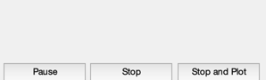
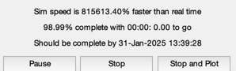
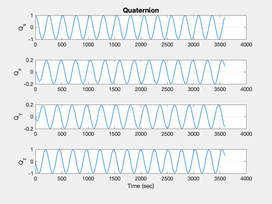
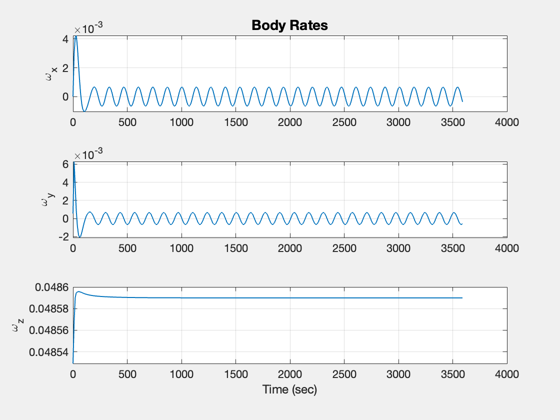
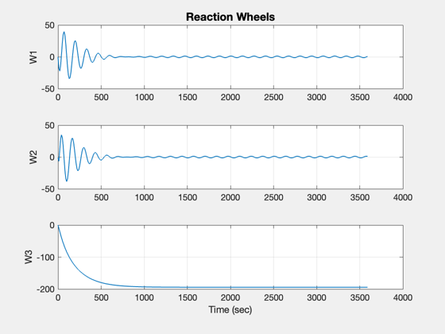
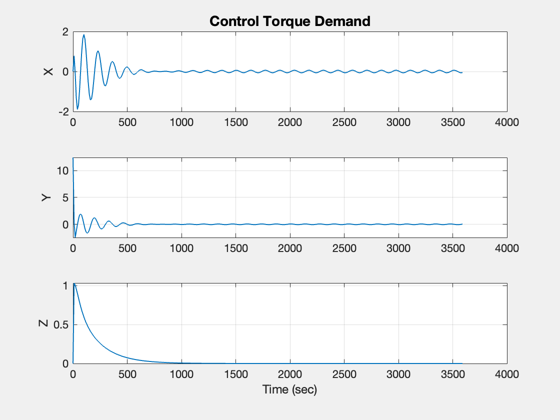
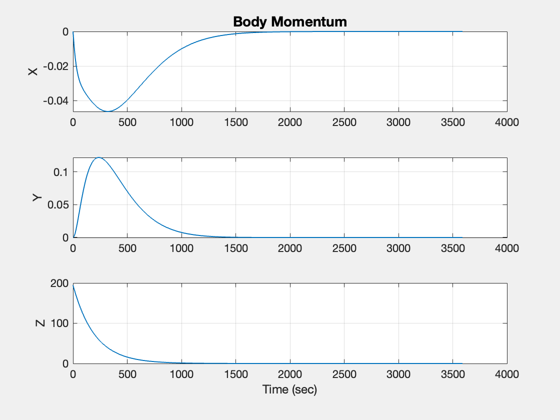
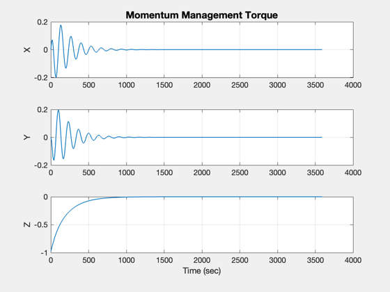
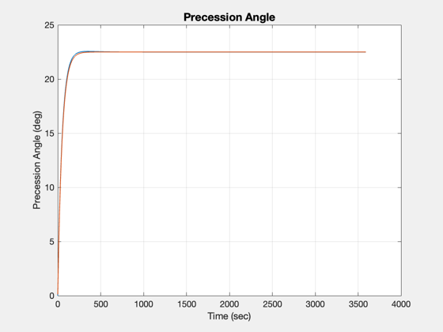
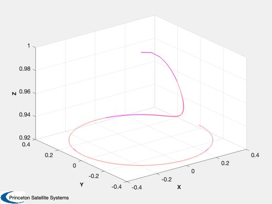

Implements and simulates the MAP normal mode control.
Demonstrate 3 axis control of a spinner using wheels. This is not the NASA design but one done in house. It shows how to integrate control design and simulation into a single script. This spacecraft is a spinner and has reaction wheels. The reaction wheels are used to control the orientation of the spin axis. The simulation demonstrates precession of the spin axis.
This script also generates an STK attitude file. ------------------------------------------------------------------------- See also PIDMIMO, PIDesign, FGs, QForm, QTForm, NPlot, Plot2D, PlotV, TimeGUI, STKAtt, CosD, RK4, SinD, JD2Date -------------------------------------------------------------------------
Contents
%-------------------------------------------------------------------------- % Copyright (c) 1996-2010, 2016 Princeton Satellite Systems, Inc. % All rights reserved. %-------------------------------------------------------------------------- % Since version 1. % 2016.1 - Update RHS to use function handle. % Save STK file in same directory as this file. %-------------------------------------------------------------------------- % -------------------------------------------------------------------------
Setting up the simulation
-------------------------------------------------------------------------
% Global for the TimeGUI %------------------------ global simulationAction simulationAction = ' '; % Constants % --------- degToRad = pi/180; radToDeg = 180/pi; rPMToRPS = pi/30; % STK Information %---------------- sTKVersion = '3.0'; % The control sampling period and the simulation integration time step % -------------------------------------------------------------------- tSamp = 0.25; % Number of sim steps % ------------------- nSim = 4*3600; % Plot every nPMax steps % ---------------------- nPMax = 40; nPlot = nSim/nPMax; % Print the time to go message every nTTGo steps % ----------------------------------------------- nTTGo = 1000; % -------------------------------------------------------------------------
Parameters for the spacecraft model
-------------------------------------------------------------------------
% Spacecraft Inertias % ------------------- inr = [2000,0,0;0,2000,0;0,0,4000]; inrRWA = 1; inrW = [inrRWA,inrRWA,inrRWA]; invInr = inv(inr); tDist = [0;0;0]; % Wheel spin axis unit vectors % ---------------------------- uW = eye(3); % -------------------------------------------------------------------------
Design the control loops
RWA Tach loops --------------
zeta = 0.7071; % Damping ratio wN = 1.0; % Closed loop undamped natural frequency [aTL,bTL,cTL,dTL] = PIDesign( zeta, wN, inrW(3), tSamp, 'Delta' ); % Attitude Loops % -------------- zeta = 0.7071; % Damping ratio wN = 0.5; % Closed loop undamped natural frequency wR = 4.0; % Rate filter break frequency tau = 50; % Integrator time constant [aRoll ,bRoll, cRoll, dRoll] = PIDMIMO( inr(1,1), zeta, wN, tau, wR, tSamp, 'Delta'); [aPitch,bPitch,cPitch,dPitch] = PIDMIMO( inr(2,2), zeta, wN, tau, wR, tSamp, 'Delta'); % Rate Loops % ---------- zeta = 1.0; % Damping ratio wN = 0.5; % Closed loop undamped natural frequency [aYaw, bYaw, cYaw, dYaw] = PIDesign( zeta, wN, inr(3,3), tSamp, 'Delta' );
Initialize the control system
-----------------------------
xTL = zeros(3,1); xRoll = [0;0]; xPitch = [0;0]; xYaw = 0; tC = [0;0;0]; spinRate = 0.464*rPMToRPS; precRate = 2*pi/3600; precAngleDemand = 22.5; precAngle = 0; precAngleGain = 0.995;
Momentum Management gain
------------------------
kMM = 0.00500; % The control distribution matrix converts % torque demand to angular acceleration demand % -------------------------------------------- aRWA = eye(3)/inrW(3); wRWAC = [0;0;0];
Plotting arrays
---------------
cPlot = zeros( 3,nPlot); hPlot = zeros( 3,nPlot); tPlot = zeros( 1,nPlot); xPlot = zeros(10,nPlot); zPlot = zeros( 3,nPlot); rPlot = zeros( 3,nPlot); pPlot = zeros( 2,nPlot); ePlot = zeros( 2,nPlot); wPlot = zeros( 3,nPlot); yPlot = zeros( 3,nPlot);
Initial conditions
------------------ q w wRWA
x = [[1;0;0;0];[0;0;spinRate];[0;0;0]]; dTSim = tSamp; t = 0; nP = 0; kP = 0; tW = zeros(3,1); roll = 0; pitch = 0; yaw = 0;
Initialize the time display
%---------------------------- tToGoMem.lastJD = 0; tToGoMem.lastStepsDone = 0; tToGoMem.kAve = 0; [ ratioRealTime, tToGoMem ] = TimeGUI( nSim, 0, tToGoMem, 0, tSamp, 'TMAPSim' );
Run the simulation
------------------
for k = 1:nSim % Display the status message %--------------------------- [ ratioRealTime, tToGoMem ] = TimeGUI( nSim, k, tToGoMem, ratioRealTime, tSamp ); % ------------------------------------------------------------------------------ % Sensors % ------------------------------------------------------------------------------ % RWA Tachometer % -------------- wTach = x(8:10); % Gyros % ----- wCore = x(5:7); % Attitude %--------- qIToB = x(1:4); % ----------------------------------------------------------------------- % The Attitude Control System % ----------------------------------------------------------------------- % Momentum Management % ------------------- % Neglect the rate errors in the body component-assume exact tracking % ------------------------------------------------------------------- hTotal = QTForm( qIToB, inr*[wCore(1);wCore(2);wCore(3)] + inrRWA*uW*(wTach+wCore) ); % Proportional controller for momentum % We could feedforward this to the controller % ------------------------------------------- tMM = QForm( qIToB, -kMM*hTotal ); % Compute the errors %------------------- precAngle = precAngleGain*precAngle + (1-precAngleGain)*precAngleDemand; cP = CosD(precAngle); sP = SinD(precAngle); xT = [sP*cos(precRate*t);sP*sin(precRate*t);cP]; xTB = QForm( qIToB, xT ); rollError = asin(xTB(2)); pitchError = -asin(xTB(1)); yawError = wCore(3) - spinRate; % The attitude control loops % -------------------------- tC(1) = -cRoll*xRoll - dRoll*rollError; xRoll = xRoll + aRoll*xRoll + bRoll*rollError; tC(2) = -cPitch*xPitch - dPitch*pitchError; xPitch = xPitch + aPitch*xPitch + bPitch*pitchError; tC(3) = -cYaw*xYaw - dYaw*yawError; xYaw = xYaw + aYaw*xYaw + bYaw*yawError; % Convert torque demand to RWA angular acceleration demand % -------------------------------------------------------- wDRWA = -aRWA*tC; % Integrate to get wheel speed demand % ----------------------------------- wRWAC = wRWAC + tSamp*wDRWA; % The RWA Tach Loops % ------------------ wError = wTach - wRWAC; tRWA = -dTL*wError - cTL*xTL; xTL = xTL + aTL*xTL + bTL*wError; % ----------------------------------------------------------------------- % Update the equations of motion % ----------------------------------------------------------------------- x = RK4(@FGs,x,dTSim,t,inr,invInr,tDist+tMM,inrW,uW,tRWA'); t = t + dTSim; % Plotting % -------- if( nP == 0 ) kP = kP + 1; xPlot(:,kP) = x; tPlot(1,kP) = t; cPlot(:,kP) = tC; hPlot(:,kP) = hTotal; zPlot(:,kP) = tMM; xI = QTForm(qIToB,[0;0;1]); rPlot(:,kP) = xI; pPlot(:,kP) = acos([xI(3);xT(3)]); ePlot(:,kP) = [rollError;pitchError]; wPlot(:,kP) = xT; yPlot(:,kP) = xTB; nP = nPMax - 1; else nP = nP - 1; end % Time control %------------- switch simulationAction case 'pause' pause simulationAction = ' '; case 'stop' return; case 'plot' break; end end j = 1:kP; tPlot = tPlot(j); epoch = JD2Date; filePath = fileparts(mfilename('fullpath')); [err, message] = STKAtt( fullfile(filePath,'STKAttitudeFile.txt'),sTKVersion,epoch,kP,tPlot,xPlot( 1: 4,j),'quaternion'); Plot2D(tPlot,xPlot( 1: 4,j),'Time (sec)',['Q_s';'Q_x';'Q_y';'Q_z'],'Quaternion') Plot2D(tPlot,xPlot( 5: 7,j),'Time (sec)',['\omega_x';'\omega_y';'\omega_z'],'Body Rates') Plot2D(tPlot,xPlot( 8:10,j),'Time (sec)',['W1';'W2';'W3'],'Reaction Wheels') Plot2D(tPlot,cPlot(:,j),'Time (sec)',['X';'Y';'Z'],'Control Torque Demand') Plot2D(tPlot,hPlot(:,j),'Time (sec)',['X';'Y';'Z'],'Body Momentum') Plot2D(tPlot,zPlot(:,j),'Time (sec)',['X';'Y';'Z'],'Momentum Management Torque') Plot2D(tPlot,pPlot(:,j)*radToDeg,'Time (sec)','Precession Angle (deg)','Precession Angle') PlotV([rPlot(:,j);wPlot(:,j)],'X','Y','Z','Spin Axis and Target') Plot2D(tPlot,ePlot(:,j)*radToDeg,'Time (sec)',['Roll (deg)';'Pitch (deg)'],'Attitude Errors') %-------------------------------------- % PSS internal file version information %-------------------------------------- % $Id: 4ce0c6cfd04f2bf8fceb00b386ab475d9ba8f1a5 $        